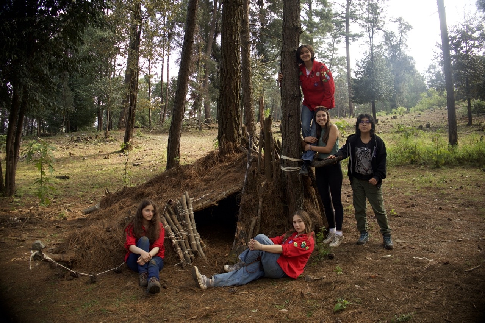

La edad en que se elige el camino propio. Aquí los proyectos son grandes, las decisiones son tuyas, y la cordada — esa cuerda que ata a los compañeros de expedición — la formas tú.
La Comunidad de Pioneros y Pioneras es la sección donde los jóvenes asumen el control de sus propios proyectos. Aquí no hay actividades planeadas para ellos: las planean, las ejecutan y las evalúan ellos mismos.
Es la etapa de los proyectos de gran alcance — empresas de varios meses, expediciones, construcciones, servicio comunitario de impacto. Los jefes acompañan, pero el rumbo lo marcan los Pioneros.

La Comunidad bebe de dos mitologías que describen el mismo coraje desde dos costas distintas. Los Pioneros toman su mística de los relatos vikingos del norte: la expedición, la fuerza colectiva, el honor. Las Pioneras se nutren de la tradición celta del oeste: la conexión con la tierra, la sabiduría circular, la palabra que ata.
El drakkar parte cuando todos reman. La expedición vikinga no era un viaje solitario — era una empresa colectiva donde cada hombre tenía un puesto y una responsabilidad. Esa es la imagen que rige a los Pioneros: una tripulación, no un grupo.
El círculo druídico: igualdad entre todas, palabra empeñada, conexión con la tierra. La tradición celta enseña que la fuerza no está en el primero del grupo, sino en la cadena que las une. Las Pioneras adoptan esa imagen del clan femenino que cuida sus raíces.
Proyectos de varios meses con objetivos concretos. Construcciones, expediciones, talleres. La Comunidad lo planea entero — desde el presupuesto hasta el cierre.
Campamentos donde se duerme bajo lo que tú construiste, comes lo que tú cocinaste, navegas con lo que tú leíste. Aprender que no necesitas tanto como crees.
Pionerismo de verdad: torres, puentes, refugios. Madera y cuerda hasta levantar algo en lo que el grupo entero pueda subirse.
Salidas a sitios arqueológicos, ecosistemas distintos, comunidades rurales. La Comunidad sale del Pedregal para entender el país en el que vive.
Cada año la Comunidad elige un proyecto social grande — apoyo a comunidades rurales, reforestación, intervenciones en albergues. No es una visita puntual: son meses de planeación, recaudación y trabajo en campo, con resultados medibles.
Es el momento donde lo aprendido en la sección sale del grupo y se entrega a quien lo necesita.
Parque Luis Barragán · Jardines del Pedregal · CDMX
+ campamentos y empresas según calendario
Si te imaginas construyendo algo grande con quince personas más que también quieren hacerlo — esta es tu sección. Te esperamos cualquier sábado.
Escríbenos por WhatsApp